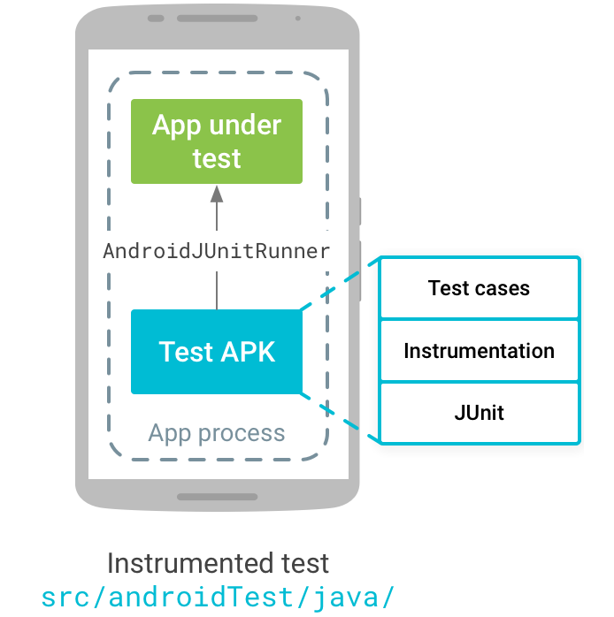

layout: true .top-line[] --- class: center, middle # UI 테스팅 --- ## 안드로이드 앱 UI 테스팅 * Espresso 테스팅 프레임워크 * Android Testing Support Library - AndroidJUnitRunner: JUnit4 호환 유닛 테스트 - Espresso: 단일 앱의 UI를 테스트하기 적합 - UI Automator: 시스템과 여러 앱을 테스트 * API 10부터 지원 * module-name/src/androidTest/java  --- ## Espresso 설정 * app의 build.gradle에 dependency 설정이 필요 - 기본적으로 되어 있으므로 고칠 경우는 없음 ```java dependencies { // 기타 dependencies androidTestCompile('com.android.support.test.espresso:espresso-core:2.2.2', { exclude group: 'com.android.support', module: 'support-annotations' }) } ``` * 실행할 디바이스(또는 Eumlator)의 개발자 옵션에서 애니메이션 설정 끄기 - Window animation scale - Transition animation scale - Animator duration scale --- ## 테스트 케이스 만들기 * 테스트는 1. 테스트할 뷰 지정: ViewMatcher 2. 테스트 액션 수행: ViewAction 3. 결과 확인: ViewAssertion ```java onView(withId(R.id.my_view)) // withId(R.id.my_view) is a ViewMatcher .perform(click()) // click() is a ViewAction .check(matches(isDisplayed())); // matches(isDisplayed()) is a ViewAssertion ``` --- ## 테스트 케이스 예 ```java @RunWith(AndroidJUnit4.class) public class MainActivityTest { * @Rule public ActivityTestRule<MainActivity> mActivityTestRule = new ActivityTestRule<>(MainActivity.class); * @Test public void mainActivityTest() { onView(allOf(withId(R.id.Name), isDisplayed())) .perform(click()) .perform(replaceText("john"), closeSoftKeyboard()); onView(allOf(withId(R.id.OK), isDisplayed())) .perform(click()); onView(withId(R.id.textview)) .check(matches(withText("Hello"))); } } ``` * 안드로이드 스튜디오에서 테스팅 실행 - module-name/src/androidTest/java/.../MainActivityTest.java 를 마우스 오른쪽 버튼 누르고 실행 --- ## ViewMatcher * onView(withText("문자열")) * onView(withId(R.id.리소스_아이디)) * onView(allOf(withId(R.id.리소스_아이디), withText("문자열")) - allOf(조건1, 조건2, ...): 모든 조건을 만족하는 View * onView(allOf(withId(R.id.리소스_아이디), not(withText("문자열")))); - ID는 R.id.리소스_아이디 와 같고, 테스트는 "문자열"이 아닌 View --- ## ViewAction * click() * typeText(): View를 클릭하고 문자열 입력 * scrollTo() * pressKey() * clearText() --- ## ViewAssertion * doesNotExist(): 해당하는 뷰가 없음 * matches(): 해당하는 뷰가 있음 ```java onView(withId(R.id.textToBeChanged)) .check(matches(withText(STRING_TO_BE_TYPED))); // R.id.textToBeChanged ID를 가진 View가 STRING_TO_BE_TYPED라는 텍스트를 가지고 있으면 정상 ```